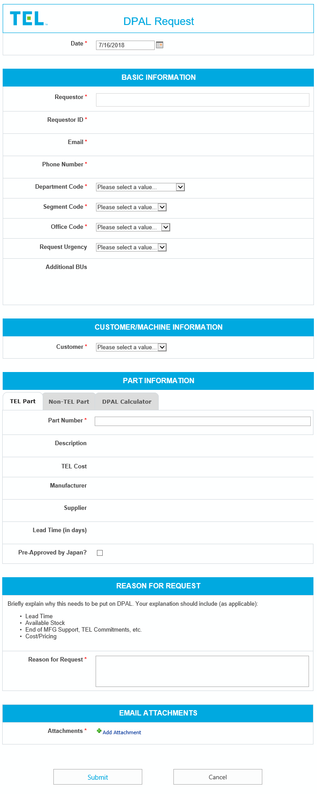
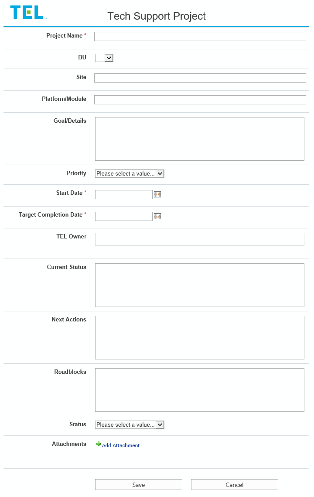
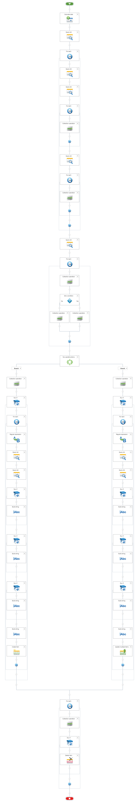
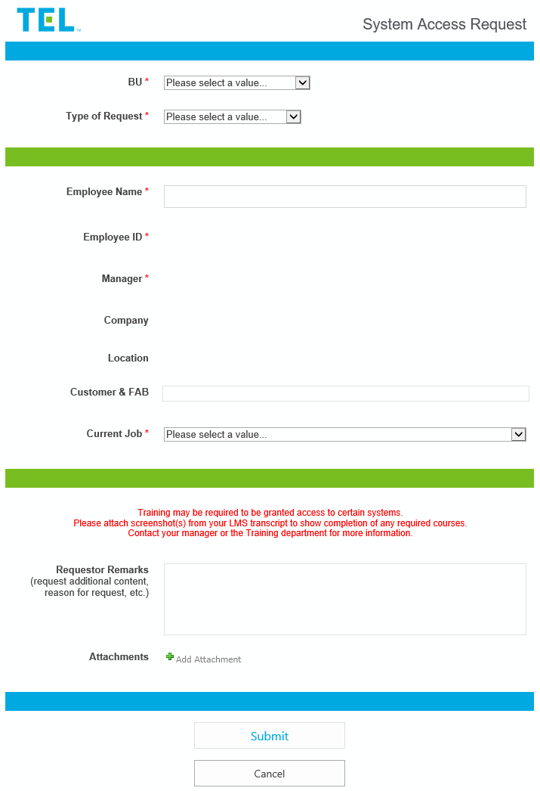
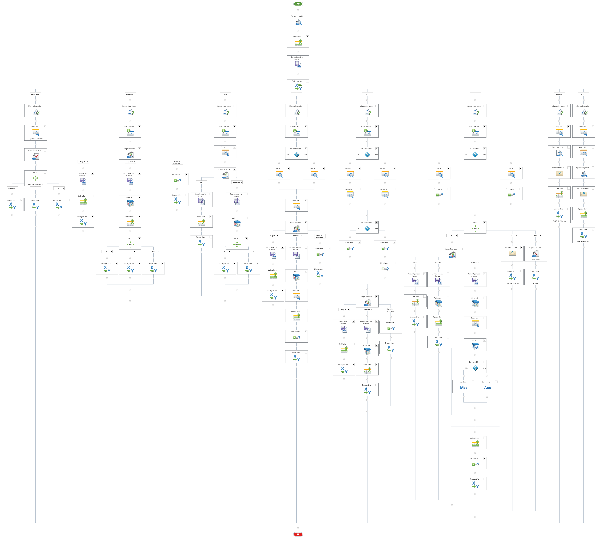
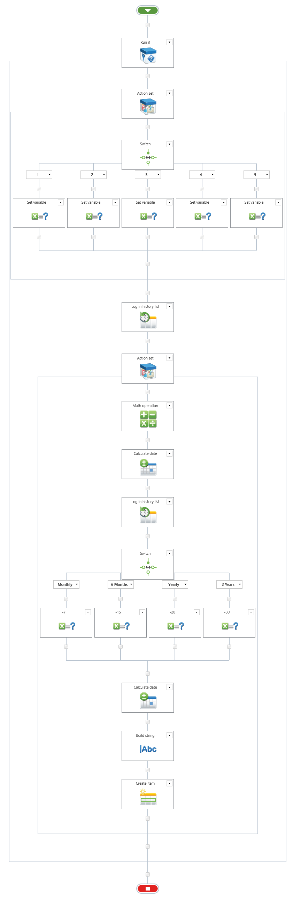

Tokyo Electron
December 2016 - Present
December 2016 - Present
Tokyo Electron has a large number of business forms and automated workflows built on Microsoft's legacy platforms, InfoPath and SharePoint Designer. Because Microsoft plans to drop support for the former in several years, there is a need to rebuild all SharePoint-based systems with a different set of products. Largely, Nintex has been the main tool the IT department has opted to use to convert and update existing forms and workflows.
When I first began this job I knew almost nothing about SharePoint and Nintex, much less InfoPath and SharePoint Designer, but learned quickly by studying existing solutions. Within a few months I took part in (re)building small forms and workflows myself. This involved working with stakeholders to make sure I understood the business process and that I was able to meet their needs.
The DPAL Request conversion project was the first large system upgrade I undertook. Although both the request form and the workflows that accompanied the approval process were complicated, having to work with one contact person made things easier for me. Because he did not ask me to change how the form was structured or functioned and how the workflow operated, challenges I faced were "only" technical in nature.
Here's an example to illustrate what I mean: The fact that InfoPath and SharePoint Designer are different products from Nintex Forms and Workflow yields its own set of challenges. There are obviously going to be differences in terms of what you can and cannot do, and there was never less than a few instances where I did not encounter some roadblock due to these differences while working on any large-scale conversion project. Sometimes you have to create workarounds, but depending on the nature of these workarounds, they can either improve or further complicate the system.
We focused on the form first. Three things I want to point about it:
Then came the workflows. The entire approval process was split into two workflows due to the size, and how the way the approvals worked suited having two different workflows better. The first workflow was fairly straightforward, but the second one posed some problems. A request was approved based on which business units were chosen in the request form, but Nintex does not support dynamic approvers. What I ultimately went with was to wrap approval actions in a parallel task action, with each business unit having its own "Run if" condition.
All things considered, the project went relatively smoothly and quickly. After launch there were a few bugs, but they were fixed promptly. Around this time I moved to a new department to support a different set of groups but my duties entailed similar responsibilities.
Upgrading the SEM work sign-up system was one of the earliest projects I was assigned to work on. SEM is an electron microscope TEL uses to view and take photographs of wafer samples. Engineers and technicians need to take turns using the SEM machines. The sign-up system serves the purposes of a) allowing engineers to request a technican to photograph their samples; b) keeping track of who is in line to use them; and c) storing records of every work (to be later analyzed for reporting).
The form and workflows had already been converted to Nintex not too long ago, but the manager of the department requested that I add in the capability of allowing technicians to log in time-in and time-out before a request is fully complete. My plan was to give them the ability to split a job by creating a workflow that would automatically create a copy. Simple, right?

Yeah... except it wasn't. The workflows, of which there are more than a few, wound up being rather straightfoward individually, but a common problem I ran into was how they stepped onto one another's toes all the time. Another was the how closely they were tied to the form and to the SharePoint list. All three of these combined to create a fragile network that was the SEM work sign-up system—disturb one small detail and the whole thing was affected.
Another issue I encountered—for months—was with the request form. In the end, I was forced to put in about two dozen "rules," which were properties you could apply to form controls to change how they behave, based on defined conditions. This was an abnormally high number but became necessary in order for the form to function the way it was supposed to.
Overall this was a project that required me to assess an existing system and add complex enhancements to it, some of which were rendered difficult simply because of certain decisions the developer made originally. I learned the value of planning, testing, and documenting.
At around the same time I began the preceding project, I was approached with the following business problem: One department contained about half a dozen major business units, each operating independently and working on their own projects. The management of this department wanted to see a roll-up of all projects in one place—the only issue was how they could set something like that up and where.
After discussing with the managers, getting a clearer sense of what they wanted, and exploring options, we decided to go with creating a project list in each business unit's SharePoint site and building an automated workflow that would retrieve data from all these lists and update them to a summary list.
This was one instance where having even a modicum of programming experience became useful. Although you do not need to know how to code to build Nintex forms and workflows, knowing it produces a mindset that facilitates the building of efficient and complex workflows. The one I eventually created looped through the different lists and permitted scaling.
The system was able to do what it needed to do, but in retrospect, I might have opted for using Power BI, which to be fair wasn't being fully implemented back then, instead of Nintex Workflow to gather all project items into a summary list.
Field engineers relied on internal web applications to perform their job duties but access was usually locked down, tight. They themselves needed to request access to them, but the problem was that they didn't know how, they didn't know what to request, and they didn't know who to request it from. The company had an existing automated request system, but it was still not very clear what the process and request status looked like for requestors and approvers alike. And besides, it was built on InfoPath and SharePoint Designer, which meant I needed to step in and upgrade.
An even larger number of business units were using this system, but it was more like each business unit had its own system independent of one another, which meant there were multiple forms and multiple workflows that looked and functioned the same. My goal was to 1) consolidate them all into one system and 2) make it user-friendly for both requestors and approvers.
The form was streamlined to allow for many of the options that were existing in the previous forms—unnecessary fields were removed, redundant fields combined. Depending on which business unit the engineers selected, they would see applications and tool platform specific to that business unit. This is done through list lookup controls which retrieve data from another list and are filtered on the BU control.
As for the workflow... well, there were some challenges. Not all business units shared the same process for approving the request once it was submitted. Ideally, it would be the same, but making it the same was not within the scope of the project. I had to accommodate different processes within a single workflow, and I could see why my predecessor decided to set up a unique system for each business unit. The workflow wound up being larger than expected, but not necessarily more complicated than it looked.
I worked with one contact person to migrate the RSPL system to Nintex. Considering it took a whole team along to initially build the system with InfoPath and SharePoint Designer, a lot time and effort devoted to this project.
Essentially, someone would request an RSPL and it would go through a set of approvers. Depending on the type of RSPL it was, revisions were automatically created and eventually passed through approvers again, thereby continuing the cycle.
The form was simple to create, though I only played a minor role in creating it, but a large bulk of the workflows, while not started by me, were nonetheless completed by me. One of the trickiest business problem was how to handle the process of allowing an approver to take ownership of a task before working on a task. This was something that was not natively supported by Nintex, but the solution I came up with was to build in another approval task before the main approval task. This was where approvers could go in and take ownership.
The RSPL system contained many details that had to be attended to one by one. I could not elaborate on each of these one by one without making this—essay? huge block of text?—far too long, but I will say that attending to these small details was what allowed the eventually successful transition to Nintex. A few bugs came up after launch but were soon fixed.
{kind=link}
{kind=link}
{kind=link}
{kind=link}
{kind=link}
{kind=link}
{kind=link}
{kind=link}
{kind=link}
{kind=link}
{kind=link}